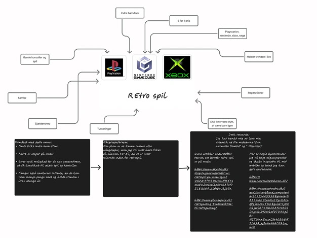
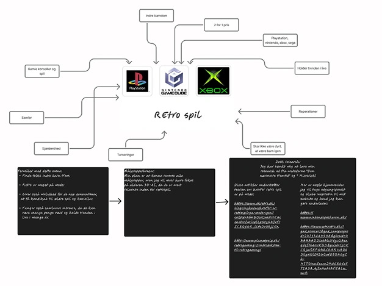
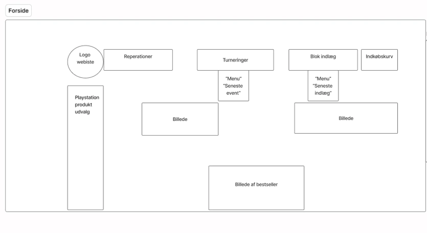
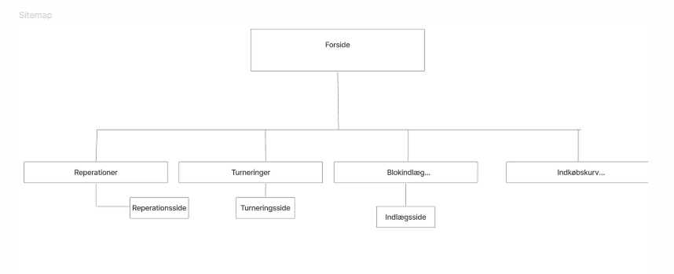

Tema 3 Grundlæggende UX-UI
Kort introduktion
På dette tema blev vi introduceret til mere om UX-UI og forskellige metoder til at lave research og ide udvikle som f.eks. desk research, moodboard, styletile osv. Vi blev også introduceret til moodboards, protyper og andre research midler og ideudviklingsmetoder.
Jeg vil komme ind på den læring jeg har fået fra dette tema og hvordan jeg har anvendt læringen på mit eget website herunder.
Formålet
Formålet med dette tema var at vi skulle lave vores egen hjemmeside ud fra UX-UI principperne og ved at researche og teste samt ide udvikle ud fra brainstorm, moodboard, styletile osv. samt at vi også skulle dokumentere hele vores proces som vi skulle fremlægge som en slags øvelse til eksamen.
Proces
Jeg valgte emnet "retro spil",med playstation som hovedfokus da jeg privat har stor interesse i retrospil. Derefter startede jeg med at lave en brainstorming og moodboards for at finde ud af hvad siden skulle indholde samt hvordan jeg kunne fange brugernes opmærksomhed.Jeg valgte at lave desk research ud fra metoderne "Den nærmeste fremtid" og "Historisk", hvor jeg ville lade mig inspirere af allerede eksiterende retrospil hjemmesider både for at se om jeg kunne forbedre noget på mit site, samt finde kilder som kunne understøtte min teori om at retro spil stadig er relevante i dag.
 

Jeg valgte, at jeg ville prøve at få brugernes indre barn frem igen ved at appellere til målgruppen spilentuiaster. Derefter lavede jeg et wireframe og et sitemap over hvordan siden skulle opstilles.
 UX og desk research
Ud fra UX principperne som omhandler hvordan man kan researche for at forstå sine brugere valgte jeg at lave et spørgeskema med spørgsmål som er en kombination af både kvantitativ og kvalitativ metode. Her lavde jeg også desk research hvor jeg kiggede på nogle forskellige artikler som kunne understøtte min teori om at retrospil stadig har relevans i dag. Spørgeskemaet brugte jeg til at finde ud af hvilke følelser og minder hjemmesiden bragte frem i målgruppen. UX giver god mulighed for at forstå sine brugere bedre, når man skal stille sit website op. Se til højre et eksempel på et af spørgeskemaets resultater; - de forskellige svar viste at retrospil stadig opleves at retrospil stadig relevante af testpersonerne og derfor kunne jeg arbejde videre med mit valg af hjemmeside.
Styletile og mockup
Efter at have forstået hvilke følelser retrospil vækker i brugerne, ville jeg gå efter at designe min hjemmeside på en måde, der ville få brugerne til at forstå hjemmesidens formål med det samme samt vække følensen af nostalgi til live. Jeg designede et stiletyle, der er inspireret ud playstation logoet og fandt fonten "Irish grover" der passede godt til mit retro tema.
Da jeg havde lavet mit styletile, gik jeg igang med at udarbejde mockups, hvor jeg lavde 2 forskellige versioner. Her er et af de mockups jeg udarbejdede som indeholder designet ud fra mit styletile. Med basis i UI-principperne i prototypen besluttede jeg at logoet skulle kunne tage brugeren tilbage til forsiden og at der skulle være en global navigationsmenu som kunne lede brugerne til alle sitets sider.
Her til højre er et billede af prototypens forside som er lavet til en klikbar prototype i Figma. For at finde ud af hvilken prototype som fungerede bedst og virkede mest brugervenlig, lavede jeg en "Tænke højt test" og en "5 sekunders test" på 3 testpersoner. Testene skulle give mig viden om brugernes forståelse af budskabet og om hjemmesidens brugervenlighed, inden jeg begyndte på den endelige kodning. I "Tænke højt testen" spurgte jeg testpersonerne om hvordan de kunne finde den side som er nævnt i spørgsmålet. I 5 sekunders testen fik testpersonerne 5 sekunder til at studere prototypen og derefter spurgte jeg dem om de forstod budskabet på siden og om oplevede siden som overskuelig. Jeg gav også testpersonerne mulighed for at give feedback og komme med forslag til hvad der kunne gøres bedre på siden.
Hvad er UX-UI?
UX (User experince) er den samlede oplevelse en bruger har. Inden for design bruger man UX til at researche for at forstå brugerne og løse deres behov.
UI (User interference) er de visuelle elementer man kan se på en hjemmeside. Elementerne bruges til at give brugeren en nem og overskuelig oplevelse ved at navigere på et site.
Hvad er en tænke højt test og en 5-sekunders test?
En tænke højt test er en test, hvor afsenderen giver deres testpersoner en række spørgsmål, omkring hjemmesiden, der bl.a. kan omhandle hvordan man kan finde en bestemt side på hjemmesiden. Den er god at bruge for at finde ud af hvor brugervenlig en hjemmeside er.
En 5-sekunders test er en test man foretager af forsiden for at finde ud af om sitet giver det rette indtryk af det, man ønsker at opnå med sin hjemmeside.
Løsning
Ved at anvende værktøjer som brainstorm, moodboard, styletile og via desk research og test har jeg udarbejdet en brugervenlig hjemmeside som er designet med afsæt i UX-UI.
Det færdige resultat kan ses her:
Læring
Jeg har lært undervejs igennem dette tema, at man bedre kan planlægge hvordan ens site skal opstilles, når man forinden har lavet wireframe, sitemap og prototype. Det giver også bedre overblik over hvad man gerne vil opnå og man har en slags skitse at arbejde efter. Derudover har jeg også lært hvordan man anvender desk research og hvordan man kan designe en hjemmeside ved hjælp af UX-UI.